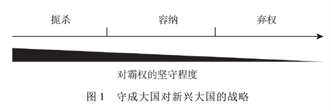
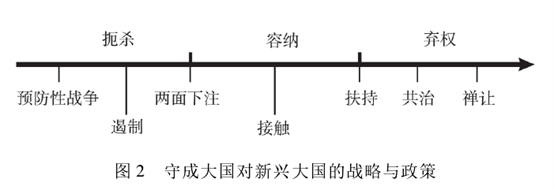
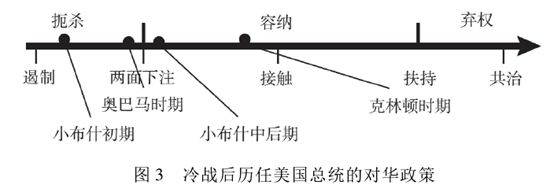

收录于合集
本文经国政学人公众号首发，转载请注明来处！
简
李开盛
**
**
上海社会科学院国际问题研究所研究员
摘要
中国崛起中两方面挑战: 一是中国如何对待美国主导的自由主义世界秩序; 二是现有的世界秩序框架如何容纳一个不断崛起的中国。但第二方面受到了忽视，守成大国维护世界秩序的责任也被忽略。从学理上分析，容纳是守成大国愿意以适当减损自己权力、利益或调整规则的方式，在现有秩序中主动给予新兴大国更多空间，承认其与实力相应的权力与地位，从而避免重大冲突和动荡。容纳政策无法根本解决权力转移的问题，但为新老大国提供了磨合、回旋、最后达成权力妥协的空间。守成大国的选择与新老大国的互动是容纳政策的条件。冷战后，美国对华政策从态度反复的低程度容纳，到强调中国单方面责任，再到有意识压缩中国的权力空间，反映了守成大国对待新兴大国的消极态度。中国应该采取积极的态度去推动实现。
关键词
容纳 中国崛起 世界秩序 权力转移 中美关系
** 世界秩序视角下的容纳崛起**
“容纳”放在国际政治特别是双边关系下，是给予一定的权力与利益空间接受对方，以使其与自己同处一个秩序安排之下。 由于国际秩序中的权力空间与利益总是相对固定的，这种接受可能也意味着接纳方要做出一定的让步，以此实现双方关系的和谐与整体秩序的保持。
当容纳一词用于守成大国对新兴大国崛起的态度时，主要是指: 守成大国愿意以适当减损自己权力、利益或调整规则的方式，在现有世界秩序框架中主动给予新兴大国以更多的空间，承认其拥有与其增长的实力相应的权力与地位，从而避免新老大国间发生重大冲突、避免世界秩序发生重大动荡。 守成大国理论上有三种选择: 一种是 弃权 ，全面放弃领导地位; 二是 扼杀 ，全面坚守自己的权力，禁止任何权力让渡和规则变更，完全不允许新兴大国将上升实力兑换为权力; 三是 容纳 ，虽然坚持自己的领导地位，但愿意给予新兴大国更多的权力份额与利益空间。这三种选择事实上形成了一道政策光谱。（如图1）

可以根据强硬程度将政策反应列举为预防性战争、遏制、两面下注、接触、扶持、共治、禅让，这些政策均可以在“扼杀—容纳—弃权”光谱中找到自己的位置( 如图 2) 。 预防性战争和遏制属于扼杀范围 ，它们分别意味着以战争和非战争手段扼杀新兴大国的崛起。 “两面下注”则是接触、约束与制衡的组合体 ，因此它介于扼杀与容纳之间。通常所讨论的 接触政策属于容纳的范畴 ，兰德尔·施韦勒认为，接触政策指的是使用非强制性方法来改善一个崛起的主要大国行为中不满足于现状的因素，它包括将不满的国家吸纳入国际社会、接受现有国际秩序的各种尝试与努力。 更深层次的容纳体现为扶持 ，即守成大国帮助新兴大国成长。 弃权的初级形式是共治 ，即守成大国与新兴大国共同治理世界，如G2 的概念，是守成大国的一种弃权政策，尽管放弃得并不彻底。彻底的弃权政策是禅让，即放弃领导权，而不是通过非和平的手段去制止新兴大国获得这种权力。英国到美国之间的霸权转移就是如此。

图 2 显示出，守成大国对于新兴大国的态度往往与其政策手段的暴力程度相挂钩。 一般来说，守成大国越是倾向于扼杀新兴大国，它就越有可能使用或威胁使用武力; 它越是倾向于给予新兴大国更多的权力与空间，就越有可能使用和平的手段。因此容纳政策更有利于世界秩序和平。而极少有守成大国会自动放弃霸主地位。历史上这样的情况仅仅发生过一次，那就是霸权由英国向美国转移。但那发生在英国的实力地位早已被美国超过，而且第二次世界大战前面临更加紧急的德国威胁和战后实力被极大削弱的情况之下。
容纳政策无法从根本上解决新老大国之间的权力与利益冲突，也无法一劳永逸地制止两者走向战争。 容纳政策之所以重要，原因在于两点 : 一是确实必要。 一个国家的实力兴衰由其国家成长规律所决定，只要这种实力增长没有被用于侵略，外力扼杀就是不正义的。期间权力增长是新兴国家基于自己利益的要求，也是一种国际治理框架的需要，能够做较大贡献。另一方面，大国之间核武器恐怖平衡的形成、经济相互依赖所造成的制约都使得新老大国间的战争成为一个代价巨大的选择。综合这两方面，要维护秩序与正义、确保新的权力更替避免历史上的战争覆辙，新老大国就必须做出某种相互妥协，对霸权大国来说就是有必要采取容纳之道。 二是有其价值。 在国际社会不存在中央政府和国际权威机制来管理权力转移的情况下，容纳政策如果被有效使用，将给很容易发生误解与冲突的新老大国提供磨合、回旋乃至最后达成和平的权力妥协的时间与空间，从而增加大国间和平竞争并实现权力和平转移的可能性。基于和平竞争基础上的权力转移是一项最为公平而且合理的选择。这意味着最终的权力赢家是那些能够把握政治、经济和社会发展规律，能够更好地发展自身综合实力的国家，如果做不到这些就只能成为输家。因此，容纳崛起并不等于新兴大国最终崛起本身，容纳政策的最终走向关键还是取决于新老大国对于容纳所带来机会的把握。对于新兴大国来说，和平竞争的权力转移实际上是提供了代价更小的和平发展机会。而对守成大国来说，则有可能不通过武力为代价继续保住自己的霸权。另外，由于权力的转移没有通过战争进行，失败者不会承受惨重的损失，国际社会也不会因此受到“池鱼之殃”。 这样的选择对所有人来说都是有利的，应该成为大国关系的一种新范式。
** 权力转移、世界秩序与美国责任**
就中美关系而言，美国作为守成大国履行了这一责任吗?为了维护世界秩序的和平，美国在未来的新老大国互动中应该承担什么责任? 它是否可能采取容纳政策?为了推动美国实行容纳政策，中国又该采取什么样的措施?
( 一) 美国政策变化对中美关系的影响
本部分将对冷战结束以来美国历届政府的对华政策进行考察，判断美国在新老大国关系背景下的对华政策本质及其变迁。根据前面的概念分析，确认 容纳政策主要包括两点: 第一，美国是否给予与中国实力增长相应的地位与权力? 这就需要我们把注意力从双方在具体事务上的合作与斗争转移开来，关注权力共享这样的实质性重大事务。 第二，当美国这样做时，是否属于主动给予? 如果美国是在国际或中国的压力下被迫给予，而没有采取武力或强制措施，仍然属于容纳政策。但这是一种被动的容纳，与主动的容纳相比，其政策的“成色”当然要减掉不少。
1．克林顿时期
1993 年到 2001 年担任美国总统的克林顿正好经历了中国在 1989 年后稳住阵脚跟并走向崛起这一段时期。在这八年的时间里，美国对华政策也发生了较大的变化。克林顿的第一任内对中国政策没有予以足够的重视，而是任凭国会和其他利益集团来左右对华政策的议事日程，所以，在克林顿当政的最初几年里，美国没有一个首尾一贯的、明确的对华政策。这在很大程度上也是因为当时中国走向与中美关系都处于冷战结束冲击带来的过渡期，中国的未来和中美双边关系的走向都不明显。但到了 20 世纪 90 年代中期，随着中国在邓小平视察南方之后重新强有力地走向改革开放，实力日益增长，西方对于“中国垮台”的幻想破灭，开始以一种现实的态度与中国打交道。克林顿政府从 1993 年 9 月开始调整对华政策，实行“全面接触”政策。这一时期，有时一种基辛格式的共管论点被提了出来，有时美国似乎接受中国在南亚、台湾地区、中南半岛的临近地带和朝鲜半岛有合法的安全利益。但是并不清楚的是，美国是否愿意提供给中国与其扩展的经济和政治力量相称的更大的全球或地区掌管的权力。 总的来说，这一时期美国奉行的所谓接触政策具有初步的容纳色彩，但其方向是含糊的，内容比较抽象，美国政策也有反复，在接纳中国的态度上比较被动。更重要的或许是，克林顿的所谓接触政策并没有得到国内的共识支持。
2．小布什时期
这一时期，中国的崛起速度明显加快。小布什执政前的 2000 年，中国的国内生产总值( GDP) 约为美国的 1/9，排在世界第六位。这一时期的美国对华政策却出现了 低开高走的过程 。最重要的原因就是九一一事件。
小布什政府一上台就埋葬了克林顿政府提出的“建设性战略伙伴关系”，而将中国视为可与美国“匹敌的战略竞争者”，对华实行“预防性遏制”，为此批准对台军售、宣布保护台湾地区，甚至把中国列为潜在的核打击对象。但九一一事件的发生，美国把反恐视为头等大事，并发动阿富汗战争。结果，中美关系迅速从战略竞争转变为战略合作关系。此后直到小布什 2009 年年初卸任，中美关系都保持了基本稳定，甚至被双方认为达到了历史上的最好时期。
但是， 稳定的中美关系并不等于美国对中国的容纳。 小布什政府接受中国崛起的前提是希望中国接受现有秩序，而不是为之做出调整。随着小布什政府对中国的战略定位由“匹敌竞争者”转变为“负责任的利益攸关者”，美国的对华安全政策目标在 强调确保中国没有能力挑战美国全球霸权的同时，逐步转向促使中国主动接受美国主导的现存国际秩序，成为国际体系中的现状国而不是修正国。 小布什政府的对华政策有复杂的一面，如“两面下注”战略在小布什政府时期逐渐发展成熟，建立在美国对中国既有战略上的需求与借重，又因双方互信缺乏导致相互猜疑的现状之上的，其核心内容是美国对华战略应该双管齐下，两手准备，即接触与防范并举，但其重心是对华防范、牵制甚至是围堵。
3．奥巴马时期
**奥巴马进一步发挥 小布什对华政策的两面性，并在对华战略牵制方面开展重大部署。**与小布什政府一致的是，奥巴马政府指望中国发挥 “负责任的领导作用”，但其前提是，中国必须与美国和国际社会合作，遵守各种国际规范，与美国主导的现存国际秩序保持一致。奥巴马亚太再平衡战略：以东亚为重心，进行了牵制中国的战略部署。这一时期，中国的实力继续上升。2010 年，中国的 GDP 已超过日本，成为世界第二大经济体。由于金融危机不久，美国及国际社会急切希望中国在世界经济事务上发挥更多作用。但是，中国增加与其实力相应权力的诉求却受到了美国的冷遇，特别是在奥巴马时期，美国宣称其目标是让中国融入全球经济，但其所作所为却使得中国融入既存的国际秩序变得更难。除了 消极抵制中国增加自身影响力的努力，美国还试图主动出击将中国排挤在美国新秩序之外 ——跨太平洋伙伴关系协定( TPP) 。TPP 成员主要包括中国的周边国家，表明美国已不安于东亚国家“安全上靠美国，经济上靠中国”的局面，试图在经济领域也保持主导权。美国事实上设置了中国不进行政权变化就无法满足的前提，而这样的前提并没有用于排挤新加坡与越南。

( 二) 容纳政策: 美国的责任与可能
通过上述时期的回顾可以得出如下结论:
第一、守成大国的自利本质。 从克林顿到小布什再到奥巴马时期，美国的对华政策从初级的、态度反复的低程度的容纳，到仅仅强调中国单方面的责任，再到有意识地拒绝甚至压缩中国的权力空间，反映了美国作为守成大国，在对待新兴大国方面的消极态度。美国意识到了遏制中国不可行，但又不愿意接纳中国。
第二，美国对华政策与中国的实力变化密切相关。 一个直观的初步推论是: 由于结构性的权力矛盾以及国家的自利本性，一旦美国认定中国的实力增长危及其霸权地位，就会采取一种更加不容纳的政策。当新兴大国实力仍相对弱小时，守成大国的政策可能取决于具体的问题， 如克林顿时期。一旦新兴大国实力明显地快速增长但还远达不到与守成大国平起平坐的地步，守成大国可能会采取警惕甚至围堵的政策。但如果新兴大国实力继续增长，守成大国的政策往往会在遏制( 部分扼杀) 与接触( 部分容纳) 之间徘徊，因为: 其一，新兴大国的实力一旦足以遏制守成大国采取武力手段，守成大国意识到通过武力打败不可能，就无法采取武力遏制政策。其二，因为新兴大国的实力增长很快，在国际事务中的作用越来越突出，守成大国在很多方面需要得到新兴大国的支持。
第三，基于权力互动论的视角，新兴大国的政策也会对美国的政策选择起到一定程度的塑造作用。 未来的美国对华战略不仅仅取决于美国对中国走向的判断，也取决于中美之间的相互制约和相互影响。其中一个重要的原因是，新兴大国的政策将影响到守成大国对于新兴大国的意图评估，而结合实力与意图，是一个国家评判其他国家是否构成威胁的重要因素。
第四，重要国际事件的影响。 美国在对外关系上面对的不只是权力矛盾，而与之有权力矛盾的也不只是中国一国。所以，美国的对华政策还不可避免地受到其他国家与国际事件的干扰。小布什上台后不久即发生九一一恐怖事件，对华政策低开高走就是一个典型的例子。当前，朝核问题成为特朗普最关注的国际议题，从而使得这一议题成为左右中美关系的重要变量。美国与其他大国特别是俄罗斯的关系，也可能会影响到对华政策。例如，俄罗斯在乌克兰东部冲突等问题上与西方的对抗立场，也在某种程度上牵制了美国的对华立场。
判定中国崛起的性质，将中国简单类比为以前的新兴大国是失之草率的。中国崛起的过程恰恰是一个融入主要由美国主导的全球体系的过程，在一些领域中国比美国自己还要更加坚决地捍卫现有体系( 如在自由贸易方面) 。 容纳政策 就有了基础，其 具体内容 则可根据前述容纳定义( 核心是承认新兴大国应该拥有与其增长的实力相应的权力与地位，避免新老大国间发生重大冲突)包括如下方面:
第一， 支持中国在全球经济领域发挥更多影响。 通过联合国安理会常任理事国这一地位，中国在全球政治安全领域发挥着重要作用。但是，正如前述 IMF 改革所表明的那样，在经济领域中国的声音远不符合其快速增长中的实力地位。
第二， 在地区安全秩序方面构建包容性的框架。 目前，美国担心崛起后的中国会把它排挤出东亚，中国则担心美国会利用亚洲同盟体系牵制其崛起，而双赢的方案是构建一个包括双方在内的地区安全秩序框架，为两国在东亚的持久共存提供制度性安排。
第三， 在军事领域采取减少对抗的具体措施。 美国减少在中国近海进行情报搜集活动，当然中国也保证其拦截方式必须符合规则。在做到上述方面的同时，重要的是给中国一个清晰的信号。信号不清晰，就会让中国产生误判，从而增加冲突的风险。
要实施容纳政策，美国自己的选择最为关键。而 从中国的角度分析我们该做些什么 ，本文仍然基于现实主义。以下几个方面或许是重要的。
第一，继续坚定地发展综合国力，包括能够有效阻遏美国扼杀中国的军事力量。 这种力量不但应该做到足以制止美国产生任何以武力直接扼杀中国崛起的企图，而且还能够有效防止美国在中国周边进行挑衅，如武力支持台湾地区“独立”、站在日本一方所谓协防钓鱼岛等。这些事件虽然并不意味着美国直接扼杀中国崛起，但却是对中国核心利益的直接侵犯。中国的军事力量应该是阻遏性而不是进攻性的，这种军事上的阻遏能力不必超越中国周边，主要发展“反介入/区域拒止”能力，而不是挑战美国的全球军事霸权地位。中国发展全球性军事力量应该是适当的，其基本需要应该立足于承担反恐、维和、反海盗和保护海外公民利益等国际责任。
第二，继续展示和平发展的意图，推动与美国和平共处、和平竞争的政策。其中的重点是如何处理好东亚国际秩序的问题。 对于前面提到的包括中美在内的地区安全秩序安排，考虑到目前美国的优势地位以及消极本质，中国有必要主动接触、积极推动，特别是在秩序设计方面提出自己的包容性构想。一方面以机制的形式承认美国在东亚的地位，另一方面也迫使美国给予中国在东亚地区机制特别是政治安全机制中应有的地位。
第三，利用国际事件推动中美实现战略合作。 当前最突出的可能就是朝核问题。中美已在这方面丧失太多机会，彼此之间的战略“漏洞”是导致朝核问题发展到今天这个地步的重要原因。目前，中美应该立足于战略而非战术视角看待和解决这一问题，最高目标是共同施压朝鲜弃核，但美国同意给予朝鲜安全保证和外交承认，并在半岛上建立起包括朝韩中美在内的地区和平机制。最低目标则是两国协同管控好朝核议题，使之不扩散成一个危及地区安全与中美关系的爆炸性议题。
结语
2017 年年初，一份中美智库联合研究报告指出，“中美关系正在经历过去三十多年来最深层次转型，两国对彼此的能力、意图和动向都难以做出明确判断，由此带来巨大的不适应和不确定感”。中美对抗可以坏大事、合作可以成大事，这种合作需要双方的努力，但美国作为拥有硬权力与软权力优势的守成大国，掌握着这种互动的主导权。维护世界秩序和平和实现中美良性竞争的双重目标都需要美国对中国的崛起采取一种容纳的政策。
当然，中国不应也无法坐等这一前景降临到中国和中美关系的头上，而是应该采取积极的姿态去推动实现。
注：文章有删节，完整内容及参考文献可参看原文。
文章来源：《世界经济与政治》2017年第11期
筛选：恋红尘 编辑：诗夏 敖遊
轻点下方广告支持我们
我们将更好地为您呈现精彩内容！